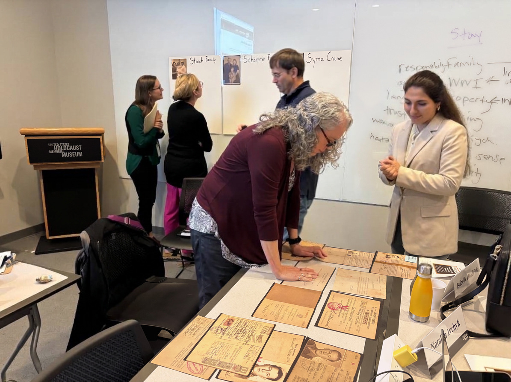

مدرس تاریخ، کالج واشتناو پژوهشگر، پروژهٔ تاریخ فراگیر (Inclusive History Project)، دانشگاه میشیگان–دیربورن پژوهشگر، مؤسسهٔ هداسا-برندایس، دانشگاه برندایس
محور اصلی پژوهشهای من شیوههای غیرمستقیم بازنمایی هولوکاست است. در پژوهشهایم به نقش سکوت و غیاب در ادبیات و سینما، تاریخ یهودیان ایران و پناهجویانی که از ایران عبور کردهاند، و دگرگونی روایتهای شاهدان در فرایند ترجمه میپردازم.
پژوهشهای من بر پایهٔ کار آرشیوی، خوانش دقیق متن و فیلم، تاریخ شفاهی و ترجمه استوار است. پرسشی که در همهٔ این پژوهشها دنبال میکنم این است: وقتی نمایش مستقیم خشونت این تصور را پدید میآورد که همهچیز را میدانیم، ادبیات و سینما چه چیزی از آن را میتوانند بیان کنند؟
دکترای ادبیات معاصر فرانسه و مطالعات فرانکوفون، دانشگاه کنتیکت، ۲۰۲۵پژوهشگر، مؤسسهٔ هداسا–برندایس، دانشگاه برندایسانآربر، میشیگان
بورسها و برنامههای پژوهشیموزهٔ یادبود هولوکاست آمریکا · مؤسسهٔ هداسا–برندایس · بنیاد شوآی دانشگاه کالیفرنیای جنوبی · مؤسسهٔ تابستانی فراآتلانتیک، دانشگاه مینهسوتا · مرکز حقوق بشر داد
تازهها
نسخهٔ بازنگریشدهٔ مقالهٔ «Knowing Non-Knowledge» به نشریهٔ Memory Studies ارسال شد.
مقالهٔ «The Persistence of the Void» بهصورت برخط و با دسترسی آزاد در نشریهٔ Holocaust Studies منتشر شد.
تدریس درس HST 109، «جهان در عصر جدید آغازین»، در کالج واشتناو.
شرکت در کارگاه بینالمللی پژوهشی گلمن در موزهٔ یادبود هولوکاست آمریکا و پژوهش در تالار مطالعهٔ مرکز شاپل.
سخنرانی در موزهٔ پولین ورشو: «هوش مصنوعی، ترجمه و تحریف حافظهٔ هولوکاست».
۰۱
پژوهش
سه پروژهٔ اصلی در حال انجام، و کارهایی که در کنار آنها شکل گرفته است.
۰۱ · کتابنگارش به پایان رسیده · در حال آمادهسازی برای انتشار
آنا لانگفوس، سینمای هولوکاست و اخلاقِ بیان غیرمستقیم
The Rhetoric of Obliquity: Anna Langfus, Holocaust Cinema, and the Ethics of Indirection
بیان غیرمستقیم چه زمانی دشواریِ فهم و بازنمایی فاجعه را حفظ میکند، و چه زمانی راوی، هنرمند یا مخاطب را از رویارویی با واقعیت دور نگه میدارد؟
آنا لانگفوس، نویسندهٔ یهودی لهستانیتبار و از بازماندگان هولوکاست، سه رمان به زبان فرانسه نوشت و در سال ۱۹۶۲ جایزهٔ گنکور را دریافت کرد؛ با این حال، در پژوهشهای انگلیسیزبان دربارهٔ ادبیات هولوکاست کمتر به آثار او پرداخته شده است. این کتاب لانگفوس را هم پدیدآورندهٔ شیوهای از روایت غیرمستقیم و هم نخستین منتقد جدی آن میداند و همین پرسشها را در سینمای هولوکاست، از آلن رنه و کلود لانزمان تا جاناتان گلیزر، دنبال میکند.
بحث اصلی کتاب این است که سکوت یا پرهیز از نمایش مستقیم خشونت لزوماً انتخابی اخلاقی نیست. برای داوری دربارهٔ هر اثر باید دید چه چیزی را ناگفته میگذارد، از چه کسی، و چرا.
سکوتچه چیزی گفته میشود و چه چیزی ناگفته میماند
نثر خویشتنداربیان تجربهٔ دردناک بیآنکه احساس مستقیم گفته شود
جابهجاییروایت رویداد تاریخی از راه موقعیتها و تصاویر دیگر
نمایشمرز میان بازنمایی رنج و تبدیل آن به موضوع تماشا
بر پایهٔ رسالهٔ دکتری Representing the Holocaust in Novels and Films: Anna Langfus and Six Directors

کار با اسناد آرشیوی، سمینار استادان سیلبرمن، موزهٔ یادبود هولوکاست آمریکا، ژوئن ۲۰۲۵.
۰۲ · پژوهش آرشیویبررسی اسناد در حال انجام است
یک دانشجوی یهودی ایرانی در فرانسهٔ دوران ویشی
Classified Between: An Iranian Jewish Student in Vichy France, 1941–1944
دستگاههای اداری حکومت ویشی یهودیان غیرفرانسوی را چگونه طبقهبندی میکردند، و این طبقهبندیها از چه زمانی بر سرنوشت آنان اثر گذاشت؟
این پژوهش سرگذشت منشه عزراپور، دانشجوی یهودی رشتهٔ مهندسی اهل همدان، را در پروندههای پلیس و اردوگاههای فرانسه، در یادداشتهای روزانهای که در سال ۱۹۴۱ به فرانسه نوشته و اکنون در موزهٔ یادبود هولوکاست آمریکا نگهداری میشود، و در روایتهای بعدی خود او دنبال میکند. فرض را بر این نمیگذارم که تابعیت ایرانی او را نجات داد؛ بلکه بررسی میکنم هر نهاد اداری تابعیت او را چگونه ثبت کرده و این موضوع چه نقشی در تصمیمگیریها داشته است.
در اوت ۲۰۲۶ در مرکز شاپلِ موزه، میکروفیلمهای پلیس فرانسه (RG-43.016M) را بررسی کردم و چندصد سند اداری گرد آوردم.
۰۳ · روششناسیدر حال انجام
ترجمهٔ ماشینی و شهادت بازماندگان هولوکاست
ترجمه ممکن است معنای واژهها را درست منتقل کند، اما مکث، تردید یا ابهامی را که در شهادت اهمیت دارد از بین ببرد.
در این پژوهش، ترجمههای انسانی و ماشینیِ شهادتهای فارسیزبان و فرانسویزبانِ بازماندگان هولوکاست را مقایسه میکنم و مواردی را مشخص میکنم که ترجمه، لحن راوی، میزان قطعیت گفتههایش یا شیوهٔ بیان نقش و مسئولیت افراد را تغییر میدهد. هر مورد با متن اصلی سنجیده میشود.
بخشی از یافتههای این پژوهش را در نوامبر ۲۰۲۵ در همایش «رویارویی با تحریف هولوکاست» در موزهٔ پولینِ ورشو ارائه کردم.
آنچه یک ترجمهٔ درست میتواند از دست بدهد
دو نمونه از سخنرانی من در موزهٔ پولین ورشو، ۲۰۲۵.
متن اصلی
ترجمهٔ ماشینی
آنچه از دست خواننده میرود
Ruthy a ensuite été envoyée en Pologne et elle a disparu.منبع: Yad Vashem, Children in the Holocaust exhibition
Ruthy was then sent to Poland and she disappeared.
در گفتمان فرانسوی دربارهٔ هولوکاست، «elle a disparu» یعنی پس از تبعید کشته شد. خوانندهٔ انگلیسیزبان فقط میفهمد که از سرنوشتش خبری نیست.
منشه را … جابهجا میکردندمنبع: IranWire, testimony of Menashe Ezrapour
Menashe was moved between various labor camps.
جملهٔ فارسی فاعل پنهان دارد: «جابهجا میکردند». جملهٔ مجهول انگلیسی این پرسش را حذف میکند که چه کسی او را جابهجا میکرد، و چرا.
پژوهشهای دیگر
محور دوم پژوهشمهاجرت و تبعید در ادبیات و هنر فرانسویزبان
رمانهای نگار جوادی و آثار زینب سدیرا: مهاجرت و استعمار چگونه به روایت فرانسویزبان راه مییابند، بیآنکه با تجربهٔ هولوکاست یکسان انگاشته شوند.
مقاله در دست نگارشزیرنویس در فیلمهای «ایدا» و «منطقهٔ مورد علاقه»
زیرنویس انگلیسی چه چیزی به این دو فیلم میافزاید و تحلیل زیرنویس تا کجا میتواند شاهد معتبری باشد.
جستار · مدرسهٔ تابستانی TASI، ۲۰۲۶بیرون از تهران: خوانشپذیری انقلابی و زیباییشناسی شورش، ۱۹۶۷–۱۹۷۹Out of Tehran: Revolutionary Legibility and the Aesthetics of Revolt, 1967–1979
برداشت روشنفکران چپ اروپا از انقلاب ایران، با تکیه بر نوشتههای میشل فوکو و ژان ژنه.
مقالهٔ کارگاه · موزهٔ یادبود هولوکاست، ۲۰۲۶مذاکرهٔ شکننده و انقباض اخلاقیFragile Negotiation and Ethical Contraction
روابط اجتماعی، سکوت و تنگشدن زندگی روزمره در اردوگاههای گورس، لِ میل و برگن-بلزن.
۰۲
انتشارات
وضعیت هر اثر تا نوامبر ۲۰۲۶. عنوانها به همان صورتی آمدهاند که منتشر یا ارسال شدهاند.
مقالههای منتشرشده
Holocaust Studies
The Persistence of the Void: Formal Absence in Holocaust Representation from Langfus to Ida
ChicagoMatloubi, Katayoun. “The Persistence of the Void: Formal Absence in Holocaust Representation from Langfus to Ida.” Holocaust Studies, published online October 16, 2026. https://doi.org/10.1080/17504902.2026.2742079.MLAMatloubi, Katayoun. “The Persistence of the Void: Formal Absence in Holocaust Representation from Langfus to Ida.” Holocaust Studies, 2026, https://doi.org/10.1080/17504902.2026.2742079.APAMatloubi, K. (2026). The persistence of the void: Formal absence in Holocaust representation from Langfus to Ida. Holocaust Studies. https://doi.org/10.1080/17504902.2026.2742079BibTeX
@article{matloubi2026void,
author = {Matloubi, Katayoun},
title = {The Persistence of the Void: Formal Absence in Holocaust Representation from Langfus to Ida},
journal = {Holocaust Studies},
year = {2026},
doi = {10.1080/17504902.2026.2742079}
}
این مقاله این دیدگاه را نقد میکند که پرهیز از نمایش مستقیم خشونت همواره رویکردی اخلاقی است. رمانهای آنا لانگفوس و فیلمهای «شوآ»، «پسر شائول» و «ایدا» را همسنگ و یکسان نمیخوانم؛ هر اثر نقش متفاوتی در تبارشناسیِ میانجیگری در بازنمایی هولوکاست دارد.
منتشرشدهانتشار برخط، ۱۶ اکتبر ۲۰۲۶
پذیرفتهشده، در انتظار انتشار
Holocaust and Genocide Studies
Review of Roy Grundmann, On Shoreless Sea: The MS St. Louis Refugee Ship in History, Film, and Popular Memory (SUNY Press, 2025)
Katayoun Matloubi
پذیرفتهشدهنقد کتاب · در انتظار انتشار
مقالههای در دست داوری یا بازنگری
Memory Studies
Knowing Non-Knowledge: Perpetrator Memory and Mnemonic Form in The Zone of Interest
Katayoun Matloubi
فیلم جاناتان گلیزر فقط نمایشی از «ابتذال شر» هانا آرنت نیست. فیلم با قاببندی، نماهای طولانی و صدا، تماشاگر را در همان شیوهٔ ادراکی قرار میدهد که به تصویر میکشد: خشونت دیده و شنیده میشود، اما در ذهن جدا و دور نگه داشته میشود.
در دست داورینسخهٔ بازنگریشده در ۱۳ نوامبر ۲۰۲۶ ارسال شد
Journal of Holocaust Research
Oblique Testimony: Holocaust Representation in Literature and Visual Art through Langfus and Boltanski
Katayoun Matloubi and José Luis Falconi
مقایسهٔ رمانهای آنا لانگفوس با آثار کریستیان بولتانسکی و بررسی شیوههای غیرمستقیم بازنمایی هولوکاست در ادبیات و هنرهای تجسمی.
در حال بازنگریبازنگری دوم در دست انجام است
کتاب
دستنوشتهٔ کتاب
The Rhetoric of Obliquity: Anna Langfus, Holocaust Cinema, and the Ethics of Indirection
Katayoun Matloubi
بر پایهٔ رسالهٔ دکتری Representing the Holocaust in Novels and Films: Anna Langfus and Six Directors (دانشگاه کنتیکت، ۲۰۲۵).
نگارش به پایان رسیدهدر حال آمادهسازی برای انتشار
در دست نگارش
مقاله در دست نگارش
Iran, Jews, Israel, and Palestine under the Pahlavi Dynasty (1925–1979): Strategic Pragmatism, Ideological Duality, and Post-Revolutionary Legacies
Katayoun Matloubi
در دست نگارش
۰۳
رویکرد پژوهشی
هنگام خواندن هر متن، فیلم یا سند میپرسم بر چه شواهدی تکیه دارد و از کجا از سند به تفسیر میرسد.
در مطالعات هولوکاست، سکوت و ناگفتهها اهمیت ویژهای دارند، اما به نظر من نباید هر سکوتی را نشانهٔ مقاومت، آسیب یا انتخابی اخلاقی دانست. معنای سکوت به شرایط تاریخی، موقعیت فرد و شیوهٔ روایت بستگی دارد. آشناییام با ادبیات فارسی و جایگاه کنایه، ایهام و بیان غیرمستقیم در این سنت، در شکلگیری این علاقه نقش داشته است؛ هرچند شباهت شیوههای بیان به معنای یکسانبودن تجربههای تاریخی نیست.
در پژوهشهایم از خوانش دقیق متن، کار آرشیوی و روشهای مقایسهای استفاده میکنم و در برخی پروژهها ابزارهای رایانشی را برای تحلیل ترجمهها و روایتها به کار میگیرم.
چهار پرسش اصلی در خوانش هر اثر
۰۱
اثر چه چیزی را ناگفته میگذارد؟
۰۲
این ناگفتهها از چه کسانی پنهان میماند؟
۰۳
این سکوت به سود چه کسی است و چه چیزی را حفظ یا پنهان میکند؟
۰۴
آیا بیان غیرمستقیم به فهم بهتر تاریخ کمک میکند، یا مانع شناخت برخی جنبههای آن میشود؟
نشست «دانش پس از فاجعه: تروما، شهادت و اخلاق بازنمایی».
۰۶
بورسها و جوایز
۲۰۲۶کارگاه بینالمللی پژوهشی گلمنموزهٔ یادبود هولوکاست آمریکا · «زندگی اجتماعی در اردوگاهها»، ۳ تا ۱۴ اوت؛ پژوهش در تالار مطالعهٔ مرکز شاپل
۲۰۲۶دورهٔ نگارش علمی Broadening Academiaموزهٔ یادبود هولوکاست آمریکا · پذیرش رقابتی
۲۰۲۶مدرسهٔ تابستانی فراآتلانتیک (TASI)دانشگاه مینهسوتا با حمایت DAAD · دانشگاه لویفانا در لونهبورگ و مرکز مارک بلوک در برلین
۲۰۲۶کمکهزینهٔ سفر پژوهشیمؤسسهٔ هداسا–برندایس، دانشگاه برندایس
۲۰۲۵سمینار استادان سیلبرمنموزهٔ یادبود هولوکاست آمریکا · «تجربهٔ یهودیان اروپای شرقی در دوران اشغال نازی و شوروی»
۲۰۲۵جایزهٔ سفر جورج میلز هارپرهمایش SAMLA 97 · یکی از دو برگزیده
۲۰۲۵کمکهزینهٔ همایش GAIN25شبکهٔ بینالمللی دانشگاهیان آلمان
دانشگاه کنتیکت
بورس تابستانی نگارش رساله (۲۰۲۵)
جایزهٔ شرکت در همایش بینالمللی (۲۰۲۵)
کمکهزینهٔ سفر علمی (۲۰۲۵)
بورس شرکت در همایش (۲۰۲۳)
جایزهٔ صلح پتی پارلت (۲۰۲۳)
بورس تحصیلات تکمیلی (۲۰۲۱ و ۲۰۲۳)
۰۷
سخنرانیها
۲۰۲۶
وقتی تهران درهایش را گشود: مهماننوازی ایرانی و پناهندگان یهودی در جنگ جهانی دوم
When Tehran Opened Its Doors: Iranian Hospitality and the Jewish Refugees of the Second World War
Holocaust Awareness Museum and Education Center, Philadelphia
سخنرانی به دعوت
۲۰۲۶
شنیدن پس از فاجعه: صدا، حافظه و شهادت غیرمستقیم در آثار بولتانسکی، شالِو-گرز، سدیرا و بارتانا
Listening in the Aftermath: Sound, Memory, and Oblique Testimony in the Art of Boltanski, Shalev-Gerz, Sedira, and Bartana
20th- and 21st-Century French and Francophone Studies International Colloquium, University of Notre Dame
ارائه در همایش
۲۰۲۶
نسلکشی، ترومای تاریخی و شهادت بازماندگان: چارچوبهایی برای فهم ستم
Genocide, Historical Trauma, and Survivor Testimony as Frameworks for Understanding Oppression
BASC 5300: Human Oppression, University of Connecticut
درسگفتار مهمان
۲۰۲۵
هوش مصنوعی، ترجمه و تحریف حافظهٔ هولوکاست
AI, Translation, and Holocaust Memory Distortion
POLIN Museum of the History of Polish Jews, Warsaw
ارائه در همایش
۲۰۲۵
دانشی که آشفته میکند: داستان فلسفی نگار جوادی در تلاقی هویت و زیباییشناسی
Disorienting Knowledge: Négar Djavadi’s Philosophical Fiction at the Crossroads of Identity and Aesthetics
SAMLA, Atlanta
ارائه در همایش
۲۰۲۴
هنر شهادت غیرمستقیم: آنا لانگفوس، کریستیان بولتانسکی و بازروایت مبهم تروما
The Art of Oblique Testimony: Anna Langfus and Christian Boltanski’s Vague Renarration of Trauma
20th/21st-Century French & Francophone Studies International Colloquium · with José Luis Falconi
ارائه در همایش
۲۰۲۴
خواندن سکوت: چرا و چگونه؟
Read Silence: Why and How?
Roundtable, Hadassah-Brandeis Institute
سخنرانی به دعوت
۲۰۲۳
بلاغت بیان غیرمستقیم: ضرورت بازنمایی تروما
Rhetorics of Obliquity: The Necessity of Traumatic Representation
Department of Art, University of Connecticut
سخنرانی به دعوت
۲۰۲۳
شهادت هولوکاست و اخلاق بازنمایی
Holocaust Testimony and the Ethics of Representation
Public roundtable and screening of Claude Lanzmann: Spectres of the Shoah, University of Connecticut
نشست عمومی
۰۸
دربارهٔ من
پژوهشگر مطالعات هولوکاست و حافظه، تاریخ یهودیان ایران و تجربهٔ فراملی یهودیان خاورمیانه هستم.
تحصیلات دانشگاهیام را در رشتهٔ زبان و ادبیات فرانسه در دانشگاه تبریز و دانشگاه شهید بهشتی آغاز کردم و دکترای خود را از دانشگاه کنتیکت گرفتم. رسالهٔ دکتریام را با راهنمایی روژه سلستن نوشتم و این رساله مبنای کتابم شد. در پژوهشهایم از منابع فرانسوی و فارسی، ترجمه، روشهای تاریخ شفاهی و تجربهٔ آموزش در موزه بهره میبرم.
در سال ۲۰۲۳ جایزهٔ صلح پتی پارلت دانشگاه کنتیکت را دریافت کردم.
حوزهها و روشها
مطالعات هولوکاست و نسلکشییهودیان ایرانی در فرانسهٔ دوران جنگ جهانی دوماردوگاههای ویشی، تابعیت و وضعیت اقلیتهاشهادت بازماندگان و تاریخ شفاهیادبیات و سینمای فرانسه و کشورهای فرانسویزبانمطالعات ترجمه و علوم انسانی دیجیتالپژوهش آرشیوی (میکروفیلمهای پلیس فرانسه در موزهٔ یادبود هولوکاست آمریکا)خوانش دقیق متن و تحلیل فیلمتحلیل منابع فرانسوی و فارسی و مقایسهٔ روایتها
تحصیلات
۲۰۲۵
دکترای ادبیات معاصر فرانسه و مطالعات فرانکوفوندانشگاه کنتیکت · استاد راهنما: روژه سلستن